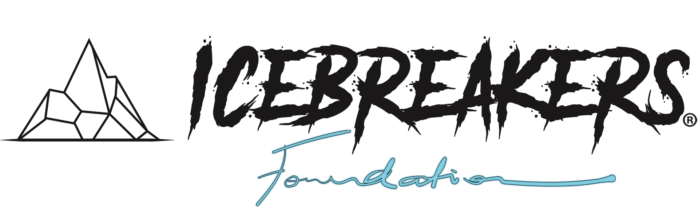

Skip to content
We’re empowering communities through refreshing change.

Icebreakers Foundation
Menu
Mission
Media
Donations
Get Involved
Contact
Donations
Donate
List of Donation Items
This is a list of items we are looking to be donated to the foundation